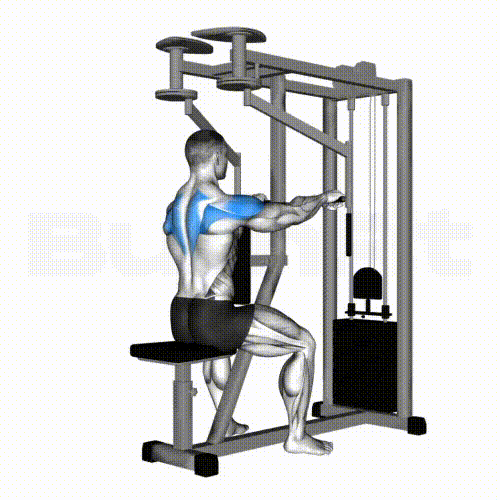

SHOULDERS/ DELTS
Shoulders, the muscle group in the upper body that is neglected the most, yet some may argue is the make-or-break
muscle that makes it look like that you actually work out. The shoulders are divided into three delts: front, side, and rear
Although many gym goers like to hit the front and side delts, the rear delts is the main issue. We want to build nice, round
and whole shoulders, which can only be accomplished by hitting all three delts of the shoulder. Here are some workouts you can
do to hit all three delts.
FRONT DELT

Dumbbell Shoulder Press
Barbell Shoulder Press
Front Raises
SIDE DELTS

Dumbbell Lateral Raises
Cable Lateral Raises

Upright Rows
REAR DELTS
